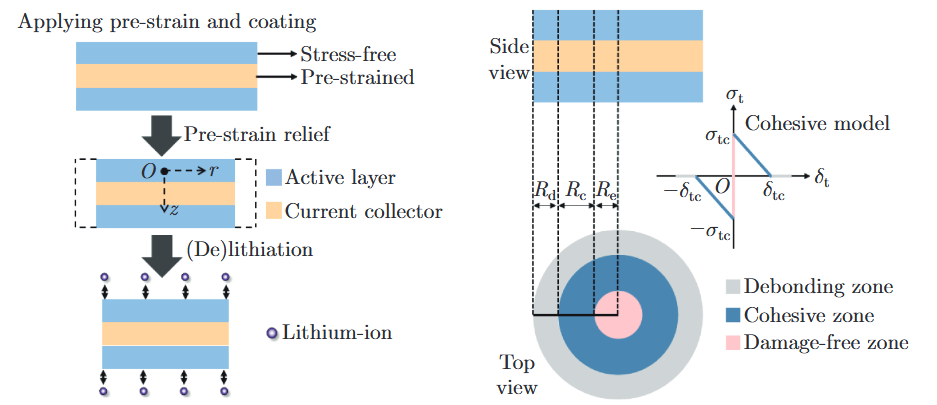
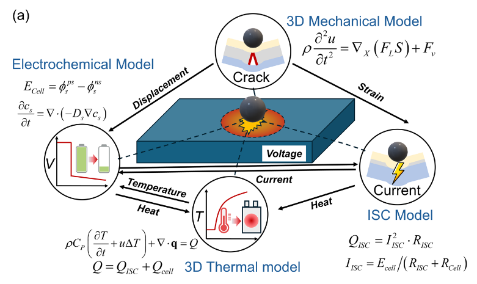
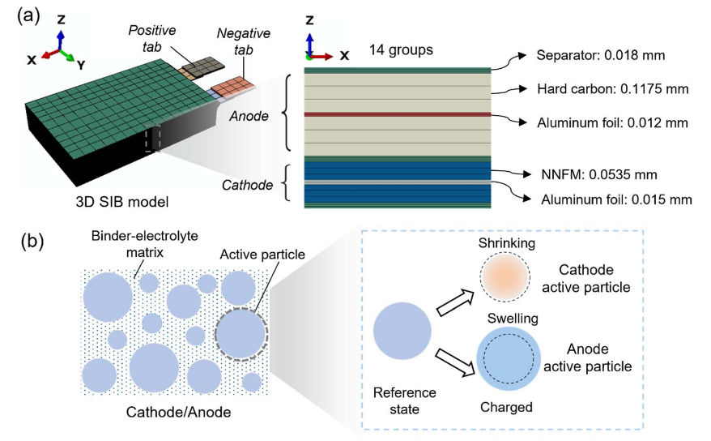
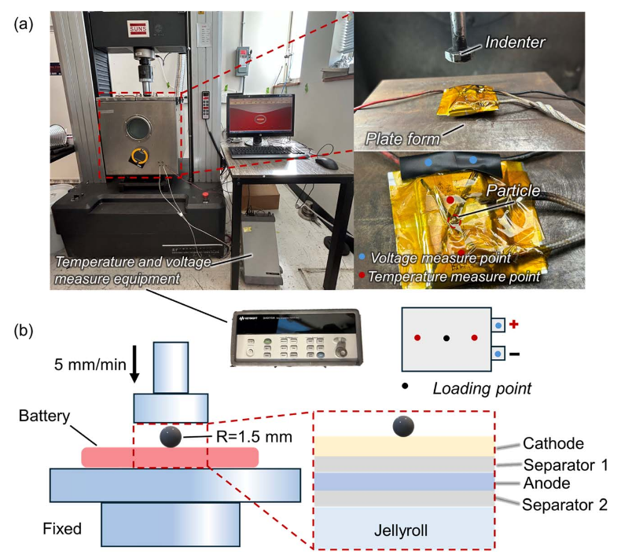
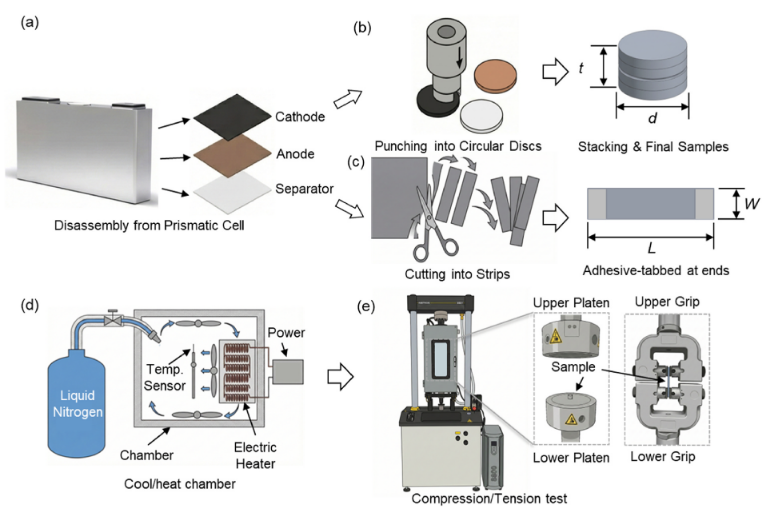

Bo Rui · Penn State
Research Interests
Current directionsMechanics–Electrochemistry Coupling: Theory and Modeling
Electrode and cell scales
Theoretical and computational investigation of coupled mechanical and electrochemical behavior in battery electrodes and cells, including electrode deformation and debonding, charge-induced swelling, and the interaction of mechanical damage, internal short circuits, and thermal response.



Experimental Safety Testing of Advanced Energy Storage Systems
Electrode and cell scales
Experimental characterization of the mechanical behavior and safety of battery electrodes and cells, with emphasis on mechanical abuse, localized loading, and coupled mechanical, electrical, and thermal responses.

